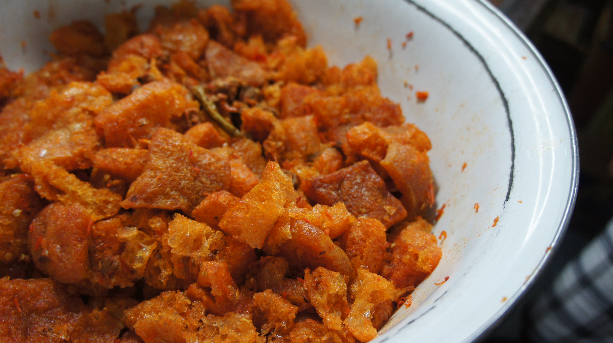
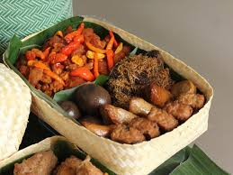
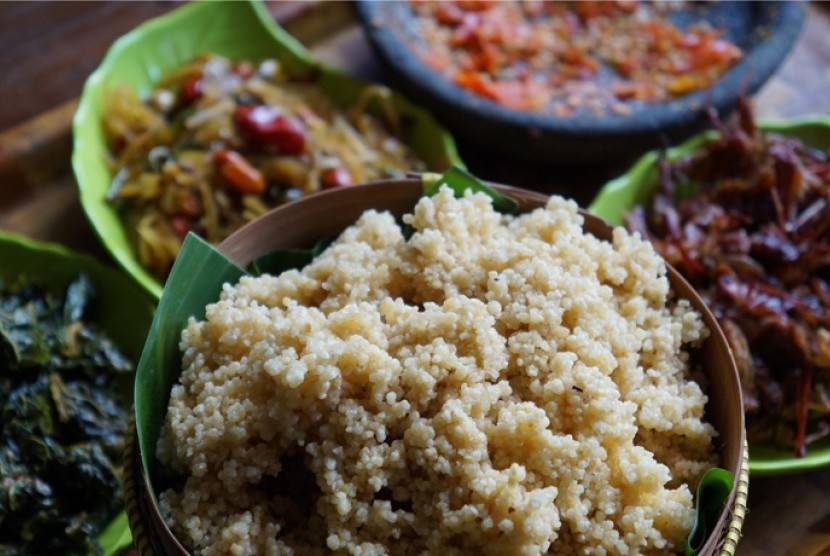

Candi Prambanan

Sambal Krecek

Sate Kletek

Nasi Gudeg

Nasi Tiwul
Sekilas Yogyakarta
Yogyakarta (atau Jogja) merupakan tempat wisata yang menarik.
Yogyakarta bukan hanya tempat rekreasi, namun juga tempat Makanan.
Rata-rata makanan Jogja memiliki citarasa manis dan gurih.
Tidak lupa juga harga makanan di Jogja tergolong murah bila
dibandingkan dengan kota lain